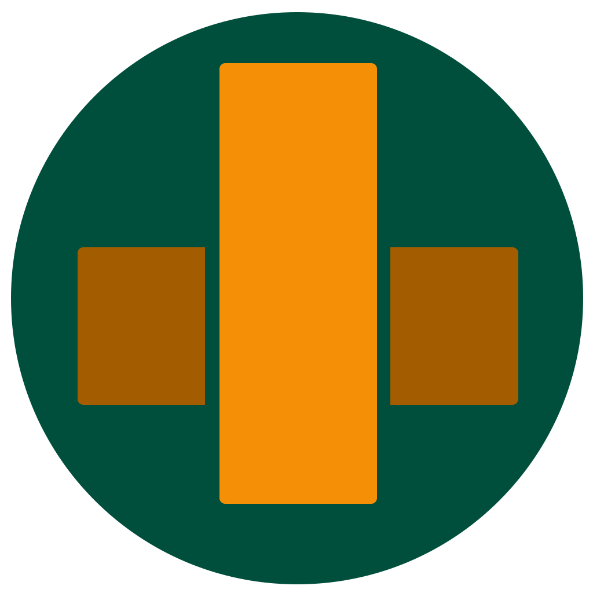

La mayor innovación desde la creación de Bitcoin puede muy bien ser MimbleWimble, un proyecto presentado de forma anónima, y que ha demostrado haber despertado el interés con monedas alternativas populares como Grin, Beam y MimbleWimbleCoin.
Bitcoin MimbleWimble es una moneda que combina lo mejor de los proyectos MW bifurcados en una moneda maestra MimbleWimble que puede proporcionar un verdadero futuro sostenible para MimbleWimble, compartiendo las cualidades de crecimiento de Bitcoin.
GRIN - 10 BMW por cada 1 GRIN
BEAM - 10 BMW por cada 1 BEAM
MWC - 5 BMW por cada 1 MWC
BITGRIN - 3 BMW por cada 1 BITGRIN
EPIC CASH - 1 BMW por cada 1 EPIC CASH
GRIMM - 1 BMW por cada 1 GRIMM
BMW utiliza su propia base de código original escrita completamente desde cero, con los aprendizajes de las bases de código BEAM y GRIN.
BMW se basa en la Prueba de trabajo, utilizando el algoritmo XBS, lo que permite a los usuarios extraer monedas mientras contribuyen a la red. A diferencia de otras implementaciones de MW, BMW no es susceptible al 51% de los ataques de grandes mineros. El algoritmo XBS utiliza un enfoque novedoso para los ataques de doble gasto, pero requiere una prueba de trabajo en la reorganización que solo es posible para un esfuerzo distribuido de actores legítimos en la red.
BMW admite un modelo de transacción inspirado en Bitcoin, por lo que es sencillo admitir direcciones y transacciones simples de envío y olvido fuera de línea.
Únase al Telegram y comparta cómo puede participar en el esfuerzo de BMW. Nos complace invitar a los de las monedas bifurcadas, así como a los nuevos en MimbleWimble con los brazos abiertos.